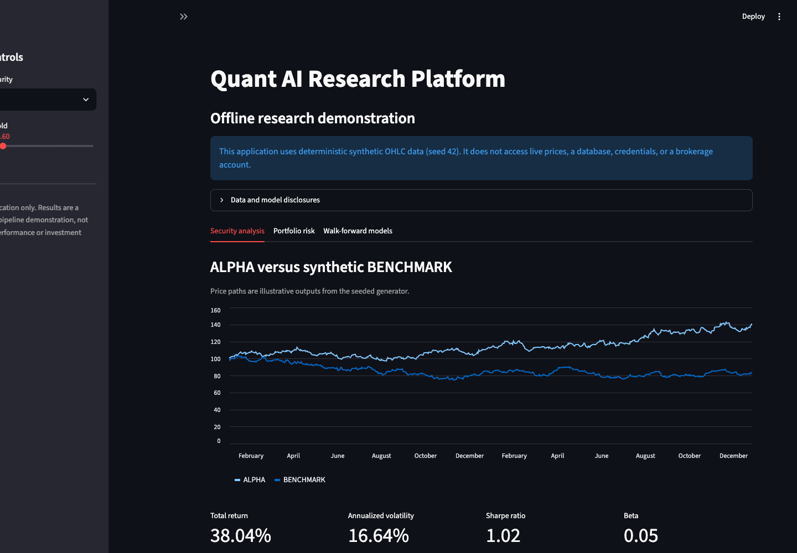
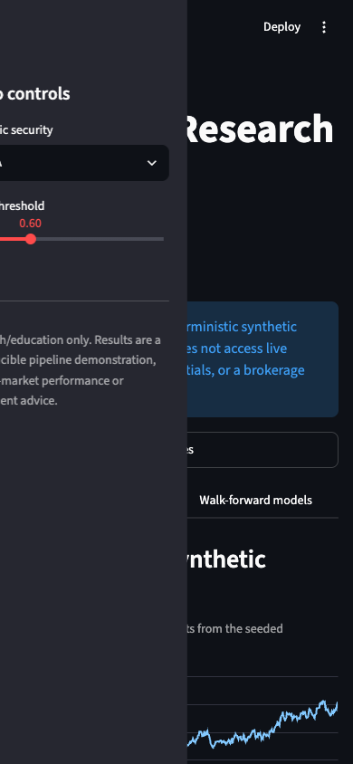

01
Custom applications & websites
Purpose-built tools and customer-facing experiences with clear ownership and maintainable foundations.
- Product prototypes
- Operational dashboards
- Accessible web experiences
Custom software · AI automation · practical delivery
MacroStofft turns difficult workflows into useful custom applications, websites, and AI automation—designed around the people, data, and decisions that already run your business.
Private prototype. No form data is collected from this page.
What we deliver
01
Purpose-built tools and customer-facing experiences with clear ownership and maintainable foundations.
02
Supervised automation that reduces manual handoffs while keeping consequential decisions visible to people.
03
Reproducible pipelines and research prototypes for teams that need evidence before operational deployment.
Public engineering evidence
We label working software, prototypes, and research distinctly. Screens shown here are MacroStofft project work—not stock imagery and not evidence of client deployment.

Working research demonstration
Reproducible synthetic-data analytics, portfolio-risk metrics, and walk-forward model evaluation.
Boundary: research demonstration only; not investment advice or live trading.

Working mobile view
Actual mobile rendering from the Quant-AI demonstration.
Prototype / research
MacroStofft is developing healthcare-focused workflow and vision research. Public evidence is published only after claims, datasets, and deployment boundaries are approved.
No customer, clinical, or production-deployment claim is implied.
A practical path
Leadership
Chief Executive Officer
Brings three decades of medical-industry experience to MacroStofft’s healthcare context, operations, and business direction.
Chief Technology Officer
Holds an M.S. in Computer Science with a specialization in Artificial Intelligence from the University of South Dakota (2022) and leads AI/ML engineering and technical delivery.
Human-reviewed inquiry
Describe the process, the people using it, and the outcome you need. A human reviews every inquiry before any response, scope, or commitment.
Existing review paths:
CEO@MacroStofft.com for project inquiries
CTO@MacroStofft.com for technical inquiries